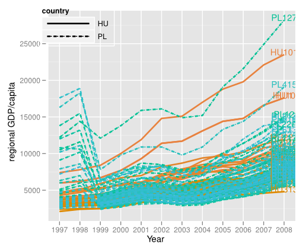
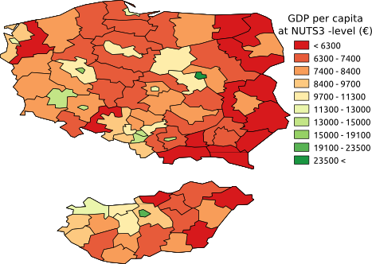
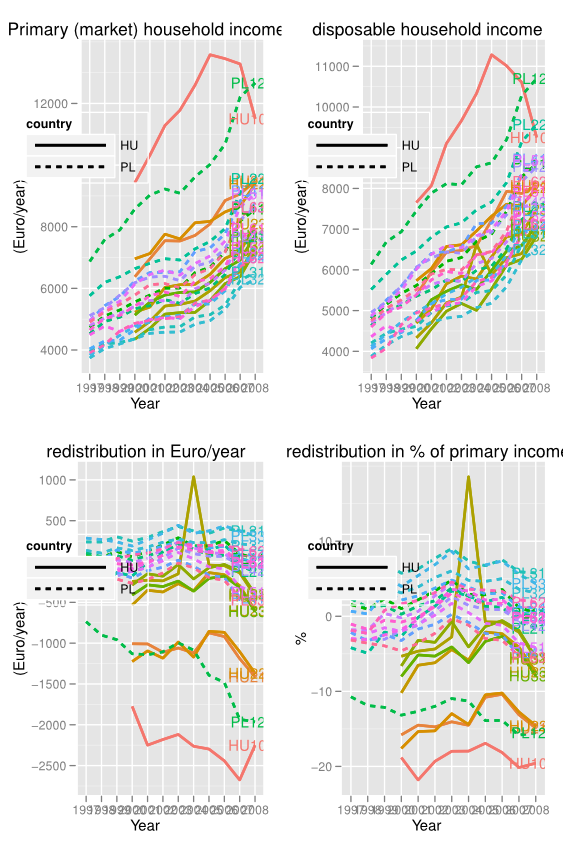

This section functions as a long and loose introduction for the short and sturdy research plan in the section 2. I will discuss main path-dependencies and path-departures during my two first years of PhD-research in terms theoretical and methodological advancement. I tried to write a text both comprehensive and simplistic in order to deliver my point. Unfortunately, it became a written expression of one thinking out loud.
I have used a metaphor of a sandbox when I have referred to some great challenges I’m constantly facing in my PhD research. To go on with this cumbersome symbol, in the first place my sandbox is defined by my scientific background. From then on, it is my quest to find the corner where I can apply my theoretical and methodological strengths and which is even partly untouched.
Finding such corner has become of a greater challenge in the field I’m working. Same datasets are shared with thousands of researchers as are the theories. There is a lot of research being done and many theoretically interesting question have been addressed in very elegant way. Often by research groups and projects, and it makes it very challenging for individual researcher.
The title of my original research plan was Twenty years of transition: the poverty outcomes of income redistribution schemes in European Post-Socialist countries and it defined my corner of the sandbox in three ways. First, in terms of temporal dimension, I was to research the post-socialist transition. Second, it defined the spatial dimension of to cover post-socialist countries in Europe. Thirdly, it defined the analytical core of my research: the study of interactions between income redistribution and poverty.
I described and gave reasons for the core of my approach in my original research plan as follows:
The empirical knowledge about welfare state development in post-socialist European countries is so far limited. There is a need for detailed country-specific analysis as well as international comparisons. The overall analytical goal of for the study is to critically assess the development of welfare state from poverty outcomes perspective on post-socialist countries, using selected western countries as a reference point. Theories, approaches and typologies used to study affluent capitalist democracies will be applied, but in a different context and in well tailored applications.
Soon after starting my research I realized that empirical knowledge was not that limited that I had believed and that my grand idea of applying theories, approaches and typologies used to study affluent capitalist democracies was not that elegant that I had thought. During the first two months I wrote two abstracts to conferences of social policy analysis and was chosen to both of them as a panellist. So, I had to write two papers in first couple of months of my research for international conferences and it was a great eye opening experience.
To cut the long story short, I found out that research ideas I had proposed were either done or in process or not possible to conduct. Or, often, not that interesting. Though the general feedback was rather encouraging, I felt like I had to develop my approach both from theoretical and methodological point of view.
My research is empirical by nature and does not aim at great theoretical advancement. I wrote in my original plan that theories, approaches and typologies used to study affluent capitalist democracies will be applied, but in a different context and in well tailored applications. I soon realized that a lot of tailoring is needed. The overall challenge I felt I had was to find a satisfactory conceptualization for a “European post-socialist poverty” that, to my mind and eyes, had several characteristics. First, poverty was more absolute, (using a very controversial term here) than in Western Europe. Poor people were more poor. Second, the different dimensions of poverty were more visible. Poverty was not just being short of money, but having the overall living conditions at low level. Both, the physical and service infrastructures were worsening and affecting the the everyday lives. This lead to the fourth characteristics that is the growing within country inequalities. Life and living standards were improving in well-off regions for well-off people in capital cities or regions with foreign direct investments, but worsening in peripheral regions and “monogorod” regions. Looking at the national averages in income poverty was masking the growing spatial inequalities. Fourth, the poverty was not a national issue any more, but it reflected across the state borders and even further. In a way, “post-socialist poverty” was becoming European wide phenomenon. I will discuss these aspect bit further in coming chapters.
What comes to conceptualization of poverty I won’t go into too much details here, but I present some graphs to illustrate the basic challenges mainstream poverty research has faced in due to enlargement of EU in figures 1.1, 1.2 and 1.3. Figure 1.1 shows the distribution of disposable incomes in EU27-countries in 2008. Post-socialist countries are filled with red and rank well below the Western European countries, with the exception of Slovenia.
Distributions of disposable income in EU27-countries in 2008 Source: EU-silc
EU official poverty threshold is based on relative income poverty, measured at 60% of national median disposable income. The measure it produces is called at-risk-of-poverty rate1 If you the look the figure 1.2 that shows the trend lines of at-risk-of-poverty rates in same group of countries. What is obvious is that though the levels of income are greatly different in countries (e.g. mean income in Austria is approx. 3 times higher than in neighbouring Hungary) the poverty levels are not that different (eg. 12,4 % of the people are at-risk-of-poverty in both countries)
The official poverty measurement of EU is based on the Western European tradition of poverty research that in it’s current form evolved in 1970’s from Great Britain. The Europe at that time was a group of to close-to-equally wealthy capitalist democracies and it was sensible also to do comparative poverty analysis based on national income distribution. As the main interest was to monitor the advancement of welfare state at the national level. However, the collapse of Soviet bloc and the enlargement of EU has changed the picture of Europe and European poverty. Enlargement introduced poor countries to EU with considerably lower living standards. That fact only is enough to challenge current as it not sensible to monitor national trends in poverty in Bulgaria using poverty line that equals disposable income of 40 Euro a month.
National at-risk-of-poverty rates using national level poverty thresholds Source: Eurostat
On the other hand, the inclusion process and the basic freedoms of EU has made the poverty and other social problems a EU wide issues. Therefore, I think, the analysis of EU poverty should also discuss the poverty as an EU wide phenomenon and monitor changes in relation to not just national, but also European standards. This has not been unnoticed by EU official and adoption of EU wide poverty threshold was suggested by [p. 115]{atkinson2005taking} already in 2005, though it has only been used in some methodological exercises [see][]{fahey_case_2007} For figure 1.3 I plotted the at-risk-of-poverty rates measured both at the national EU-wide poverty threshold, that is 60% of EU median income.
National at-risk-of-poverty rates using national and EU level poverty threshold Source: EU-silc
Despite the fact the concept of relative income poverty is rooted in the deprivation of wide range of assets have the actual deprivations also made it back to the European poverty measurement. After the enlargements of EU it soon became apparent that statistics on relative income positions sometimes failed to capture essential differences in living standards across the member states {marlier_eu_2007}. The fruitfulness of non-monetary poverty indicators was recognized in the leading scholarly work related to the process of developing common benchmarks to evaluate social development in the EU countries {atkinson_social_2002}. In 2009 the EU also decided to monitor material deprivation, complementing the income based conceptualization of poverty that were established a few years earlier. It became part of the official poverty measurement for EU2020 strategy.
The idea to study material deprivation is not new, but has been on the agenda in poverty research since the late 1970s at least, particularly in the Ireland, the United Kingdom and the United States {townsend_poverty_1979,mack1985poor,nolan1996resources}. According to this approach the focus of analysis is not on income, but rather on goods and services households can consume. People and households unable to afford certain basic items are considered to be materially deprived. Although the conceptualization and measurement of material deprivation are by no means straightforward, there seems to be some agreement that assessments based on consumption tend to produce more reliable figures on poverty than evaluations in terms of income. For example, respondents in low income household often tend to under-report income, something that may bias poverty estimates based on income surveys.
Based on arguments above, my research is more geared towards multidimensional notion of poverty, where poverty is understood as more relative to living standards of average European than average fellow countrymen.
I was not able to find my untouched corner of sandbox with the distinctions I made in the previous chapter. I needed something more and I begun to “think spatially” a bit more after I read these two books:
Buzar, S. 2007. Energy poverty in Eastern Europe: hidden geographies of deprivation. Ashgate Pub Co.
Lobao, L., Hooks, G., and Tickamyer, A. R., 2007. The Sociology of Spatial Inequality. State University of New York Press.
Stefan Bouzarowski has a backgroud in enviromental sciences and this book on post-socialist poverty answered and raised many questions in my research. He reduces (energy) poverty to households ability to adequately warm their homes and studies the mechanisms how energy poverty is produced. He stresses that the households themselves have limited capacity for solving the problem. They can pay the bills and improve the efficiency of their housing, if they have money for that. But the reason is often the supply of energy, either due to capacity deficiencies or foreign politics, in some cases. I found his work as a prime example of place based poverty, where poverty is produced not only through social mechanisms, but also spatial. From that vein I have tried to incorporate place as a risk factor for poverty with the new and old social risks for poverty.
A book by {lobao_sociology_2007} presented a somewhat solid theoretical framework for studying inequalities at territorial or subnational or regional level. They claimed quite right that analysis of poverty in social policy departs often with an study of how characteristics of individual or families are connected with higher or lower risks of poverty. That is what we call socio-economic-demographic risk factors for poverty. Of contextual factors, temporal variation due to recessions, changes in state policies and other fluctuations are given some attention in the literature and sometimes treated as major theoretical subjects {gundersen2004poverty}. Spatial context in terms of territorial variation of economic production has been addressed less often, though recognized by both scholars and policy makers {cotter2007placing}. Referring to {tickamyer_space_2000} they claim that attention to spatial variation is especially important because of the substantial variation in economic structure and poverty policies across places, and which may widen over time [p. 164]{cotter2007placing}.
[p. 3-5]{lobao2007advancing} elaborates the importance of scale of spatial analysis. Well-developed bodies of research on poverty and other inequalities are found mainly at two opposing scales: the city or local level and across the global system of nation-states, there in between is a missing middle, territorial, regional or subnational spatial scale.
Insofar as the sociological imagination has been drawn largely to cities and nation-states, we are left with disciplinary gaps: large swathe of places, people, and substantive topics are left out of systematic investigations because they do not fall into the usual categories by which sociologist carve up space. [p. 4]{lobao2007advancing}
Spatial scale is important because it defines the territorial domain from which processes creating inequality arises. Also, it can be seen as the arena for targeting policy and political action.
Social inequality was reintroduced to public debate in 2008 first in book Growing Unequal by {oecd2008growing} and year later in Spirit Level by {wilkinson2009spirit} and just recently in Divided we stand by {oecd2011divided}. Inequality is growing and policy analysts and political leaders are concerned with the consequences. These reports are discussing the overall social inequality, that in most cases is reduced to income inequality between individual or household often measured with gini coefficient. Inequality is then broken down to inequalities between certain socio-economic groups. Figure 1.4 illustrates the trend lines of national (social) inequalities. We can see that post-socialist countries (continous lines) do not form a distinctive regime in this respect. Both the most unequal and most equal country is ex-socialist.
Social inequality in EU27-countries using gini-coefficient 2003-2009. (Post-socialist countries with continous line) Source: Eurostat
Inequalities between geographic or administrative regions in EU have received substantial scholarly attention in recent years, too. Focus has been either on descriptive analysis and methodology [eg.][]{stewart_measuring_2002,jesuit2008subnational,heidenreich_patterns_2008,beckfield2009remapping,longford2010measures} or on links between regional disparities and economic growth. [eg.][]{perugini2008income,ezcurra_does_2009,peters_regional_2010}. These studies are pointing that inequalities between countries of EU have been falling over the last 20 years. At the same time the regional inequalities within countries have increased, especially within European post-socialist countries. As a result most of the economic inequalities today in enlarged EU are already inequalities within nations, between regions the regions of EU. Figure 1.5 illustrates the trends in regional GDP per capita figures from 1995 to 2007.
Here we can see a clear pattern of post-socialist countries with originally low regional inequalities becoming more unequal (continuous lines crossing the dotted lines). When we link the two dimensions of inequality in figure 1.6 we can see even clearer patterns of countries. Majority of post-socialist countries group at the top right corner of plot high in both measures on inequality. Hungary and Slovakia are interesting pair of countries with low overall income inequalities, but high regional inequalities. In these countries the well-off and poor are well separated from each other.
Regional disparities at NUTS2-level in EU27-countries 1995-2007. (Post-socialist countries with continous line) Source: Eurostat
Regional disparities at NUTS2-level in EU27-countries 1995-2007. (Post-socialist countries with continous line) Source: Eurostat
In respect to regional disparities I’m particularly interested in how social policies coincide with spatial variation of income inequality and poverty. Some public policies are targeted spatially eg. general fiscal federalism (regional policies, agricultural subsidies) or at EU level as regional funding. regional. Spatial or geographical targeting is practised when the aim of intervention is defined in spatial terms as region, while social targeting when aim is defined in social terms as poverty. By nature, poverty can be seen both as social and spatial. Mechanisms creating poverty can be rooted both in socio-economical or in spatial structures of society. Various socio-economic factors as social class, age, gender, income level are often linked with variations in poverty, but less often is poverty is linked with spatial factors eg. regional economy or unemployment, access to education, health care or regional concentration of social factors(risks).
It may be claimed that spatial analysis of socially targeted policies as social assistance has no relevance as it is social, not spatial assistance. Among social benefits, social assistance has it’s specific function in protection against poverty. And that is where rationality arises: as poverty is rooted in social structures of society it is also rooted in place. Therefore a should social programs aimed at alleviating poverty should be analysed both, in terms of social and spatial effectiveness. Another question is, of course, whether social targeted benefit can alleviate spatial poverty?
One field I wanted to advance during my PhD project was the overall methodology. Especially in quantitative research such analytical skills are valuable across the different fields and even outside academia. In my field of research I split methodology in two. One is command over different analytical tools (eg. software) and the other is mastering of various types analysis both in theory and practise in different conditions.
The key principle in this work has been a reproducible research, which in R-project is put as this: The goal of reproducible research is to tie specific instructions to data analysis and experimental data so that scholarship can be recreated, better understood and verified. The demand for reproducibility is at the very ideas of empirical sciences and has become a major topic in quantitative analysis. (The Science magazine had a theme number on the topic in this December [see][]{jasny2011again}.) In social sciences it’s not here yet, greatest obstacle being the data access, but due proliferation of data it is becoming a topic as well. The extensive use of proprietary analysis software, like Stata or SPSS, has naturally been the other major obstacle. This is the one I have tackled and over the last two years I have learned R-language for statistical analysis, LaTeX mark-up language for type-setting and Sweave for compiling them together. All free and open-source software that are constantly being developed by the research community.
The work I have done in learning these tools has made me an active member of those research communities flourishing around these tools. I must admit that the daily mailing list discussions and examples of hundreds of scientific blogs have been a great influence in my work. They have also been of irreplaceable help when learning new analytical skills. In that field I have worked most with spatial statistics, multilevel modelling and longitudinal data analysis like survival analysis and panel data regression.
In addition to spatial statistics in R, I have also studied quite a lot of Geographic Information Systems (GIS), namely Quantum GIS. In this vein Michael [p. 86.]{irwin2007territories} refers to early 20th century classics and claims that sociology as a discipline began with a core interest in the relationship between space and social organisation. He states that proliferation of GIS software and release of census data and other geographically aggregated data and the development of spatial statistics has accelerated the territorially based analysis. Locating data about social conditions in place allows a wide range of (spatial) data to be linked with the analysis. Not only details on regional economy and job markets, but also about geographical conditions like distance or climate, access to services, infrastructure etc. Finland has been a latecomer in this respect but during last few months there have been a terrific advancement in the “open data” and classified (or very expensive) spatial datasets are becoming available also for social scientist.
As a result of this messy introduction I can briefly point out the directions to my corner the sandbox. In terms of poverty conceptualisations it will more geared towards similar European wide standards involving both income and multidimensional notions of poverty. In addition to social structure of society I will also discuss the poverty in relation to actual geographical structure of society. In other words, I want to add Where to the basic question of social policy analysis of Who gets What? As final point, I will conduct these tasks according to principles of reproducible research and encourage other fellow researcher to adopt these tools and ideas…
Kainu, M. WHO GETS WHAT - AND WHERE? Regional poverty outcomes of social assistance in enlarged EU In: 18th International Research Seminar on Issues in Social Security, June 10, 2011. Foundation for International Studies on Social Security. Seminar presentation.
Kainu, M. Cross-sectional profile of poverty and inequality outcomes of income redistribution schemes in European post-socialist countries. In: 17th International Research Seminar on Issues in Social Security ’Global Crises’: Impact and Challenges for Social Security, June 11, 2010. Foundation for International Studies on Social Security. Seminar presentation.
ESPANET/RECWOWE summer school: Welfare States of Eastern and Western Europe. Central European University, Budapest, Hungary June 27 - July 5, 2011
“Life course dynamics and the mechanisms of social inequality”. Turku Center for Welfare Research, University of Turku, Finland August 29th - September 2nd, 2011
I will be very briefly here and only describe the current projects I’m working with and my plans for the dissertation articles and for implementation.
At the time of writing this paper I’m working on two other paper. First one is a joint article with prof. Mikko Niemelä titled Attributions for Poverty in East Central European Countries where we are studying public perceptions of the causes of poverty in East Central European countries. Paper examines cross-country differences in attributions for poverty and explores whether different lay explanations of poverty can be attributed to specific socio-demographic characteristics, ethnicity, economic circumstances and wider values and attitudes, such as generalised trust as well as attitudes towards the role of government and democracy. Our follow-up dataset focuses on (the effects of) financial crisis and therefore a special emphasis is given to public perceptions of the financial crisis and its association with attributions for poverty. I’m not certain if I will include this article in my dissertation, probably not, but we are working hard to have this submitted in next two months.
The second project is a book in Finnish titled “Eurooppalaiset elinolot” that is run by the research department of Kela and studies the counter play of various “transitions” (eg. retirement, unemployment, child birth) in life cycles and welfare state.
Lately I have also been writing and analysing background material for Aleksanteri institute Centre of Excellence (CoE) project.
I redrafted the working title of my work for this paper as: Poverty, place and income redistribution - Analysis of poverty dynamics and welfare state development in post-socialist transition. As it became clear in the first chapter I will put more emphasis in my analysis on the spatial dimension of poverty that i originally planned. I also raised the welfare state development to title, as due to simultaneity of CeO-project I will work with that discussion a lot and want to incorporate it with my work. The geographical focus remains the same and I will study Russia in one or two of the article for the same reason, though it was my idea in first place. As for the welfare policies I will focus on income redistribution, namely the social cash benefits.
With poverty dynamics I’m referring to both temporal and spatial variation in poverty. In poverty research, poverty dynamics are often discussed through questions like: How likely are people to enter, exit, and re-enter poverty? How long do people remain in poverty? And what events are associated with entering and exiting poverty? These question from one US analysis refer to poverty as a temporally varying phenomenon which I will discuss in one of my articles, most probably the other one on Russia.
Here I will introduce the current ideas I have on the topic of my articles. They are mostly already bit more than ideas, but none of them is near to submission.
A quick abstract for this one:
This paper utilizes both micro- and microlevel data to assess the role of social policies in growth of regional income inequalities during post-socialist transition from 1986 to 2009 in Hungary and Poland. A decomposition of certain inequality measures (gini, Theill) allows to estimate role of different income sources with the respect to increase in regional income inequality during transition period.
I’m currently working with the data to find out what actually can be conducted and what cannot. This has been frozen since mid December, but is soon melting. Here are just few graphs from preliminary analysis based on recent data.
 Regional trend lines of GDP/capita in Poland and Hungary Source: Eurostat
 Regional variation in GDP/capita 2008 in NUTS3 regions in Poland and Hungary Source: Eurostat
 Dynamics of income redistribution from regional perspective in Poland and Hungary Source: Eurostat
A panel data assessment of entering, exiting and re-entering to poverty during transition using Russia Longitudinal Monitoring Survey.
A study of how socially targeted policies correspond with poverty measured as material deprivation.
I’m running late from my original plan of implementation that is presented on page two. In term of published articles. The main reason has been that I haven’t been clear of my corner of sandbox and haven’t managed take any of the ideas to the submitting phase. I’m trying to catch up during coming two years.
Table: Original schedule for implementation of the study
At-risk-of-poverty rate can be also translated as a measure of income inequality among the poorer half of a country’s citizens. It is not sensitive to changes in income inequality happening in the wealthier half of population.↩